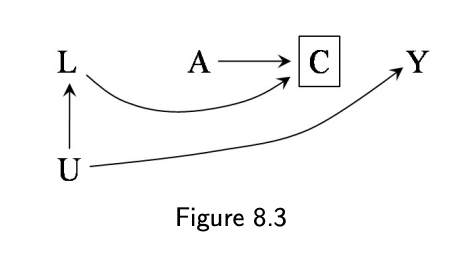

Mary Aglipay
Home
Blog
Defend!
This is a…
Dec 10, 2022
Controlled Direct Effects- What is going on?
In a typical IPW estimate, you find weights for the exposure in order to ensure balance across the exposure. You then insert the weights into a model for the outcome with…
Dec 10, 2022
But wait, isn’t the effectiveness of masks known?
It’s a good question! Isn’t the effectiveness of masks already known? Why do we have to use all these fancy methods, why did we collect all of this data if we already know?
Dec 9, 2022
Consequences of exclusion criteria in my cohort data
Peopl…
Dec 9, 2022
What is an interrupted time series analysis?
“In its simplest form, an ITS is modelled using a regression model (such as linear, logistic, or Poisson) that includes only three time based covariates, whose…
Dec 8, 2022
Assumptions of all the statistical models!
Let’s talk assumptions!
Dec 8, 2022
Please, what is the parametric g-formula?
The parametric g-formula has terrible branding. The name sounds like some kind of rocket booster requiring advanced-level physics to operate it.
Dec 8, 2022
Why not use a cohort study instead of a test-negative study? (and vice versa)
When we see vaccine effectiveness studies, we often see two types: test-negative studies and cohort studies.
Dec 4, 2022
What is record-level quantitative bias analysis?
In my proposal, there are a number of times when I mention that I am going to be…
Dec 2, 2022
Decomposition and probabilities
Now to move onto something a bit different. Decomposition! Decomposition is the process of separting effects into an indirect and direct effects for mediation analysis.
Dec 2, 2022
Machine learning - opportunities?
OK, so for one of my projects, I’m using some pretty complicated analyses–in particular, something called the parametric g-formula, which…
Nov 30, 2022
Limitations of the data
A question I get often…
Nov 29, 2022
Who are your controls in test-negative studies?
One thing that comes up in test-negative studies is, who exactly are the controls? Repeat after me: your controls are participants in your study who tested negative. If…
Nov 29, 2022
Test Negative Studies: Let’s Talk About It
If you’ve been keeping up with the Covid-19 vaccine literature, there may be a study design that sticks out to you: a test-negative study. Huh? What’s that?
Nov 28, 2022

Consequences of loss to follow-up
One problem cohort studies often face is loss to follow up. And often times the processes that give rise to participation in the cohort in the first place are also the…
Dec 9, 2012
No matching items